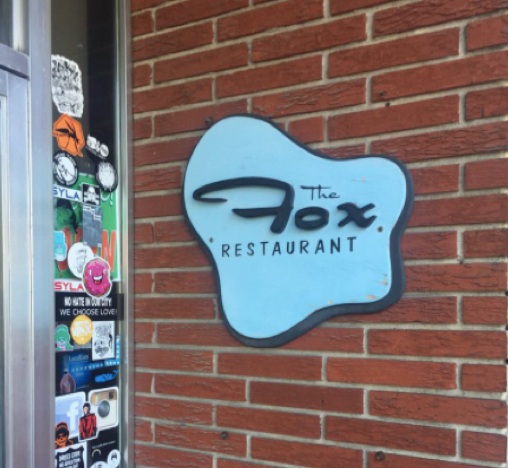
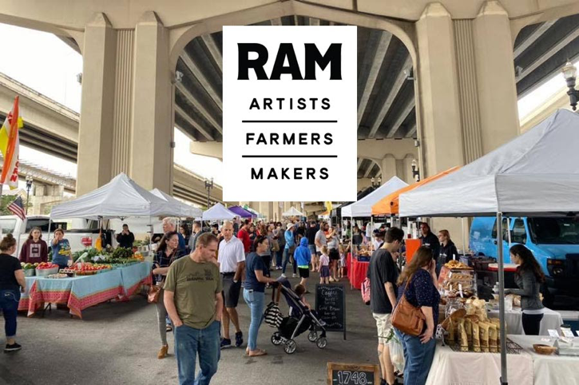

Hannah's Favorite Places:
1.) Walter Jones Historic Park
Walter Jones Historic Park has a bunch of old bulidings that belonged
to Walter
Jones as well as a school that were donated to the Mandarin
Historical Society
to keep preserved. During the weekday you can take
tours of the buildings and learn
about the history of Mandarin. There is
also a butterfly garden and beautiful trails
as well as a close by boat
dock and beautiful trees that make you forget you are in
the suburbs. It
is a great place to go on a pinic with friends and it is a hidden gem in
the city.
2.) The Avenues
The Avenues mall is a great place to go to hang out with friends and get your shopping
done.
It has tons of stores to make sure everyone can find things that they like and
there is a pretty killer food court too. It is just a great place to hang out or get
some retail therapy in.
3.) Daily's Place
That's pretty gay
Favorite Restaurant: The Fox Restaurant
The Fox, aka Fox's, is a local restaurant that has a sense of community
and makes
you feel like you are just apart of the family. They have the
best breakfast in town
and are always super nice. 10/10 recommend,
it is always worth the drive and worth the
wait. Remember eat local!
Zaina's Favrotie Places:


1.) Abandoned Annie Lytle Elementary School
It is an old schoolhouse that was built in the 1920's that soon
became
abandoned in the 1960's. The elementary school has
many urban legends
surrounding it and the mysterious fire in
the east wing that led to the school's
shut down. Many locals
claim that the janitor took kids down into the boiler room
and
burned them alive, until one escaped and blew up the boiler
room in the process,
causing the east wing to catch fire.
2.) 927 Building on Forsyth Street
It is an old building that is now completely covered in paintings
on all four
sides of the building. The murals contain seven people
that are composed of geometric
shapes with the heads of chickens.
The murals are full of vibrant blues and purples.
3.) The Arts Market in Riverside

An arts market that occurs every Saturday in the early morning
until the late afternoon.
Vendors and local artists from all over
jacksonville come to sell their goods and food
at the art market.
The market is also held alongside the St. Johns River
Favorite Restaurant: Kim’s Korean Barbeque
It is run by Papa and Mama Kim. Papa Kim used to serve in the Korean
military before
moving to the U.S. where he then served in the army here.
The restaurant has a
cozy atmosphere as it is run by the Kim Family only. You
can find Kpop (korean pop
music) playing on all TV’s within the dining area.
Each table has a mini grill used
to cook the meat yourself.